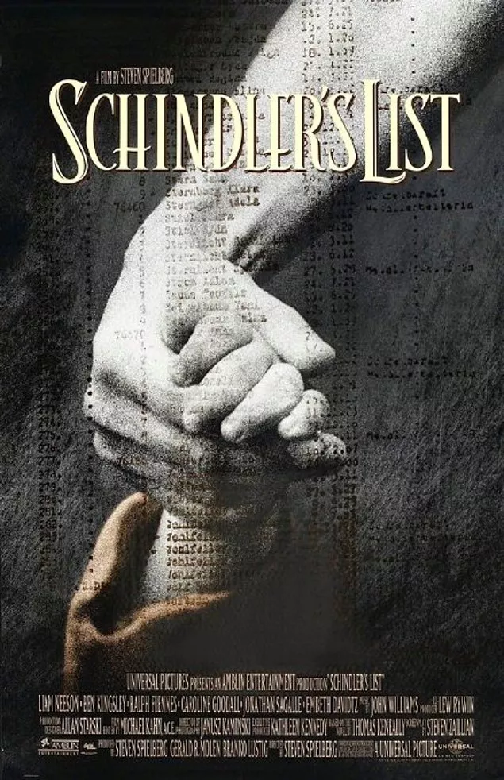

|
1. La Vita é Bella (Hayat Güzeldir) 1999 - Roberto BenigniIMDB: 8,6II. Dünya Savaşı’nın birkaç yıl öncesini anlatarak başlayan filmde başkahramanımız hayat dolu Guido, güzeller güzeli öğretmen Dora’ya aşık olur ve tüm engellere rağmen evlenirler. Ardından bir de çocuk sahibi olan çiftin hayatlarındaki tüm pürüzler ortadan kalktığında savaş patlak verir. Yahudi oldukları için toplama kampına götürüldüklerinde Guido, oğluna esir kampının ve savaşın bir oyun olarak söyleyecek; oğlu, oyunu başarıyla tamamlarsa ödül olarak gerçek bir tank kazanacaklarını söyler. II. Dünya Savaşı’nın sivillerin üzerindeki yıkıcı etkisini beyaz perdeye en iyi uyarlayan filmlerden biri olan Hayat Güzeldir, tüm olumsuzluklara rağmen her daim bir umut ışığı olduğunu adında olduğu gibi, içeriğinde de barındırıyor. Gösterime girdiği dönem büyük ses getiren film Akademi’nin de büyük ilgisine nail olup, En İyi Yabancı Film, En İyi Erkek Oyuncu ve En İyi Film Müziği olmak üzere üç dalda Oscar ödülü kazanmıştır. |
|  |
2. Schinler's List (Schinler'in Listesi) 1993 - Steven SpielbergIMDB: 8,9Thomas Keneally’in kitabından sinemaya uyarlanan film, Oskar Schindler adlı bir Almanişadamının II. Dünya Savaşı zamanında Polonya’da kurduğu fabrikada Yahudi işçileri çalıştırması ve bu sayede 1100 Yahudi’nin hayatını kurtarmasını konu alıyor. Gerçek bir hayat hikayesinden uyarlanan film, ünlü yönetmen Steven Spielberg’in en önemli yapıtları arasında sayılan ve ona Oscar kazandıran bir yapımdır. Film, 1994 yılında 12 dalda Oscar’a aday olmuş ve 7 dalda ödül kazanmıştı. Filmin kazandığı Oscar’lar şöyle : En İyi Film, Yönetim, Kurgu, Sanat Yönetimi, Görüntü, Özgün Müzik ve Senaryo Uyarlaması. 3 saat 15 dakikakalık süresiyle biraz göz korkutsa da mutlaka izlemeniz gereken bir film. |
3. The Pianist (Piyanist) 2002 - Roman PolanskiIMDB: 8,5Roman Polanski’nin üç Oscar kazanan filmi II. Dünya Savaşı sırasında yaşanan gerçek bir dramı konu alır. Polonya’lı ünlü piyanist Wladyslaw Szpilman’ın anılarını anlattığı aynı isimli kitaptan sinemaya uyarlanan film, Nazi işgali altındaki Polonya’da yaşamanın imkansızlaştırıldığı bir dönemde, bir şekilde esir kampına gitmekten kurtulan ünlü piyanistin Varşova’nın kenar mahallelerindeki hayatta kalma mücadelesine odaklanır. Varoşlarda tam anlamıyla sefil bir hayat süren müzisyen, diğer halkla birlikte, kıtlığa ve aşağılanmalara maruz kalsa da kahramanca mücadele edecektir. Günü gelip oradan kaçma şansı bulduğundaysa başkentin harabelerine sığınacak, beklemediği bir anda gelen bir yardımla umudunu yeniden kazanacaktır.
|